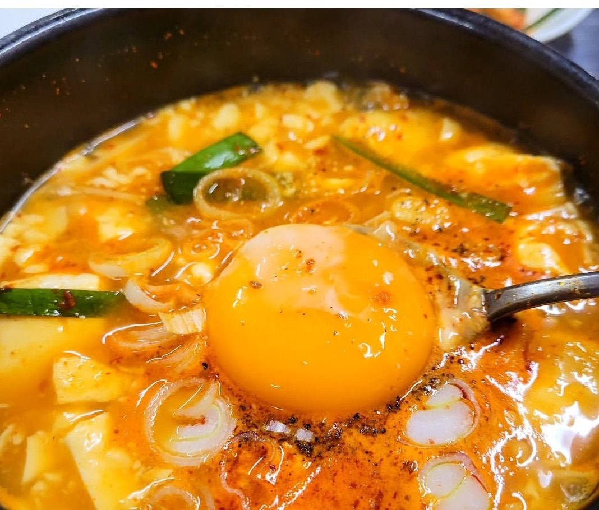
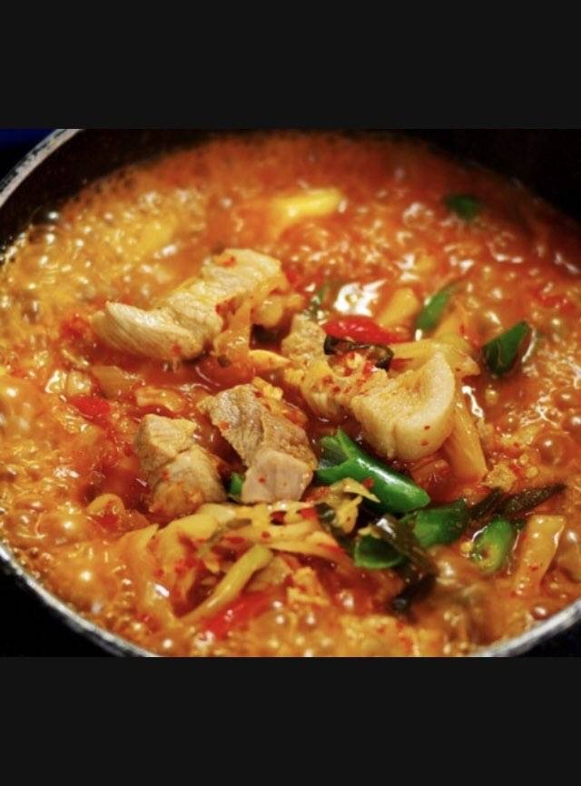
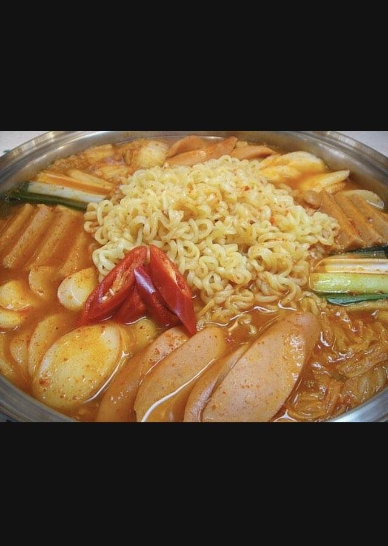
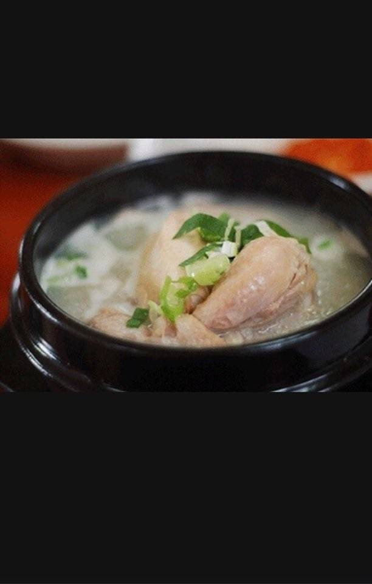
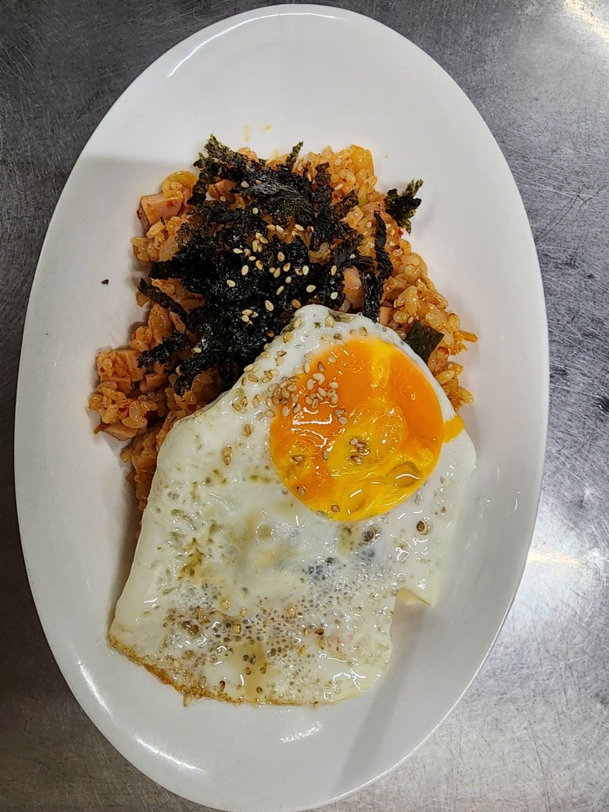
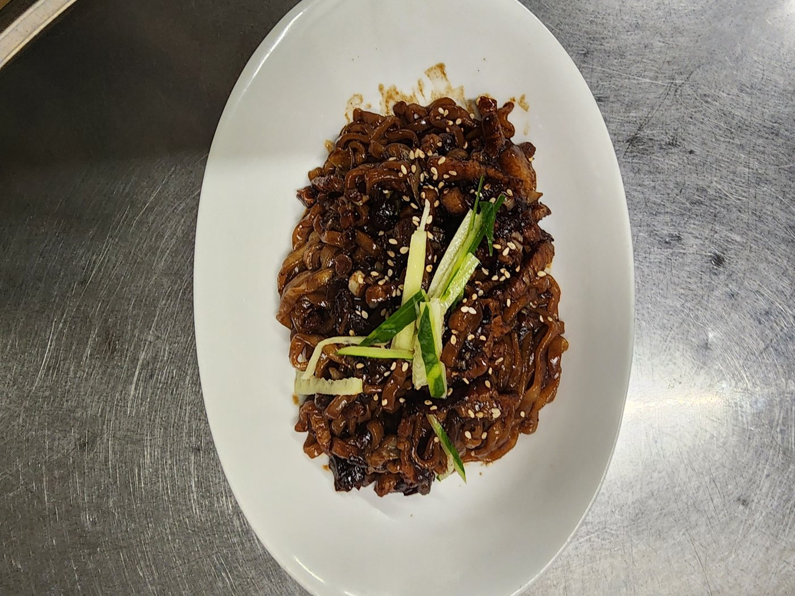
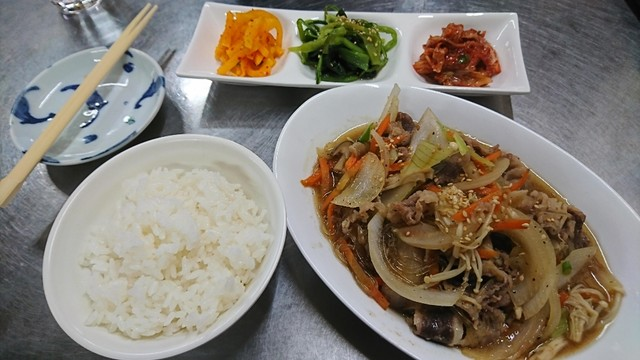
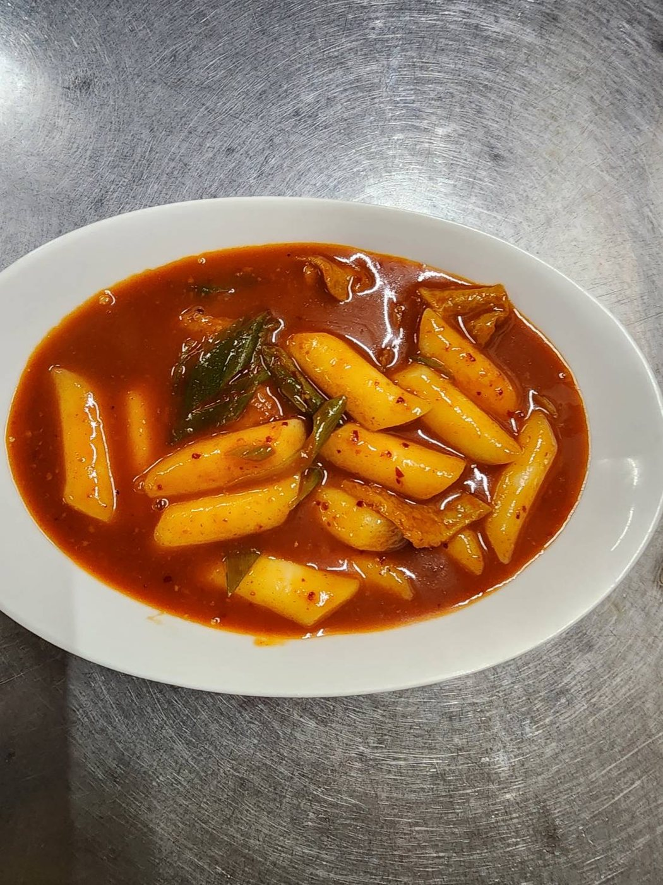
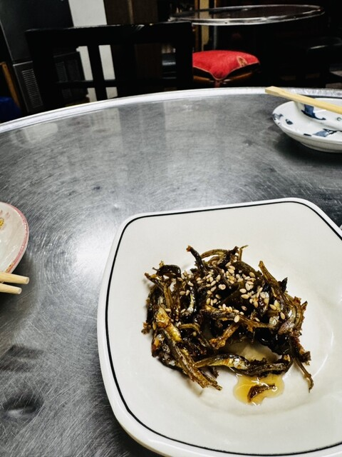

01
鉄板・焼肉

サムギョプサル삼겹살
豚バラを鉄板で。サンチュとキムチで巻いて。
店頭にて

焼肉・ホルモン모둠구이
鉄板でじっくり。ビールにもマッコリにも。
店頭にて

ポッサム（茹で豚）보쌈
茹でた豚バラを、白菜やサムジャンと巻いて。
店頭にて
02
チゲ・鍋

スンドゥブチゲ순두부찌개
ぐつぐつの純豆腐チゲに、卵を落として。
店頭にて

キムチチゲ김치찌개
熟成キムチと豚肉の、こっくり辛旨。
店頭にて

テンジャンチゲ된장찌개
韓国味噌のやさしい鍋。豆腐と野菜たっぷり。
店頭にて

ブデチゲ（部隊チゲ）부대찌개
ソーセージや餅、ラーメンも入る賑やかな鍋。
店頭にて

サムゲタン（参鶏湯）삼계탕
鶏を丸ごと煮込んだ、滋養の白いスープ。
店頭にて
03
ごはん・麺

キムチチャーハン김치볶음밥
キムチごはんを炒めて、目玉焼きと韓国のりで。
店頭にて

ジャージャー麺짜장면
黒味噌の甘辛だれをからめた韓国式の麺。
店頭にて

冷麺냉면
つるりと冷たい、さっぱり韓国冷麺。
店頭にて

キンパ김밥
彩り豊かな韓国風のり巻き。
店頭にて

プルコギ定食（ランチ）런치 세트
ごはん・スープ・ナムル付き。
店頭にて
04
炒め・粉もの

プルコギ불고기
牛肉と野菜を甘辛く。ごはんが進む一皿。
店頭にて

海鮮チヂミ해물파전
外はカリッ、中はもっちり。
店頭にて

トッポギ떡볶이
もちもちの餅を、甘辛ソースで。
店頭にて

季節の野菜炒め나물볶음
山菜や季節野菜を韓国の家庭の味付けで。
店頭にて
05
小鉢・汁物

ナムル盛り合わせ나물
季節の野菜を数種、小鉢で。
店頭にて

わかめスープ미역국
じんわり沁みる一杯。
店頭にて
ARIRANG
キムチ・各種김치
白菜キムチ・カクテキなど。
店頭にて